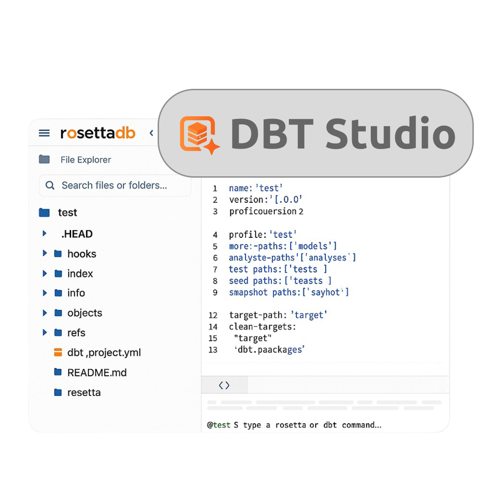
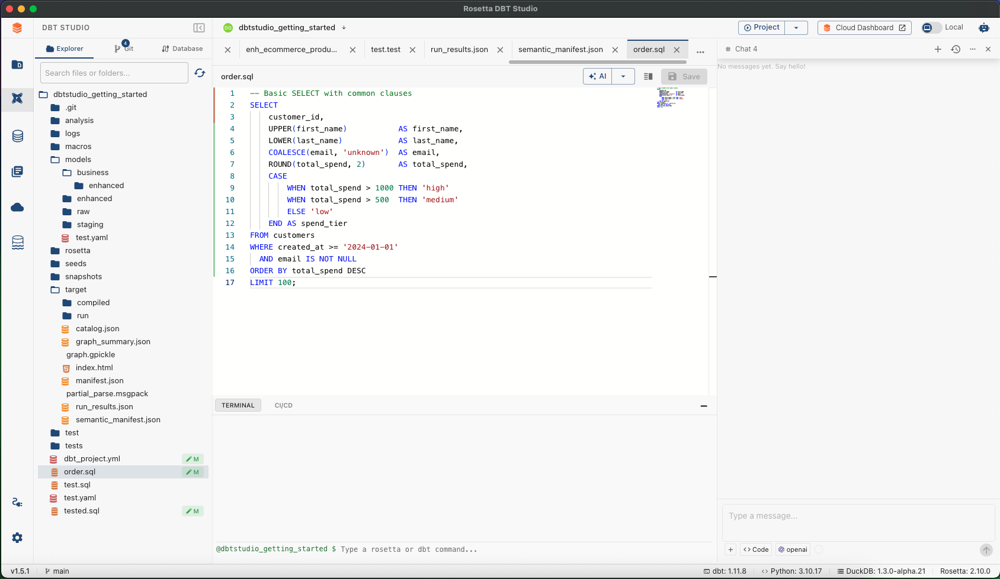
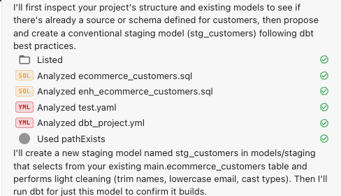
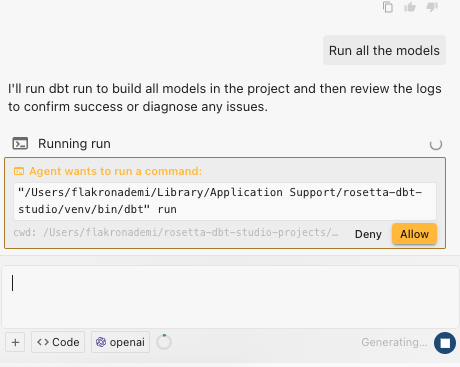
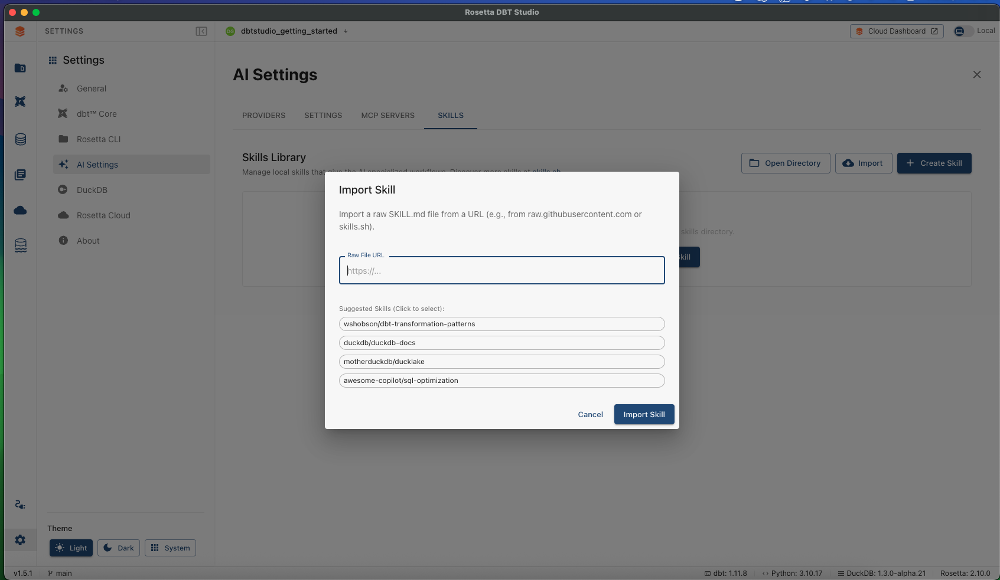
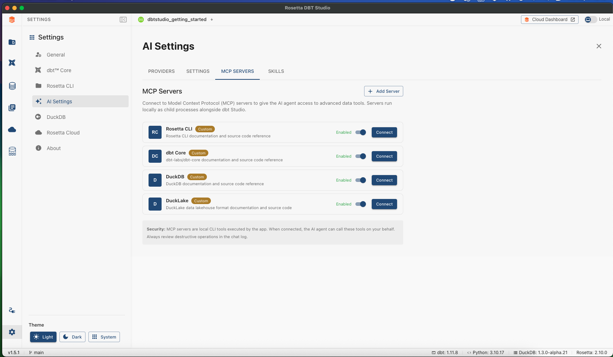
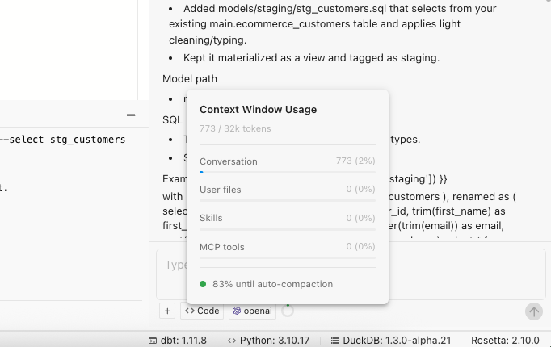

Your Autonomous dbt Engineer
Not just a chatbot. A tool-loop engine that reads, writes, and runs — inside your real project.


Code, files, and AI in a single view
The file explorer, SQL editor, and AI Agent panel all share the same window. No tab-switching. No copy-pasting. Just describe what you need and the agent gets to work inside your actual project.
Thinking in Tools
The Agent reasons step by step using native dbt and filesystem tools — all visible in real time.


Files open automatically
Every file the Agent writes or edits appears instantly as a Monaco tab. Review the code the moment it is created. Then decide — click Keep to accept the changes or Discard to roll them back. You stay in complete control.
Human in the Loop
The Terminal Confirmation Gate means the Agent never runs a command without your explicit approval.
- Shows exactly the command it wants to run
- Waits for Allow or Deny before proceeding
- Credentials stored in your OS secure keychain
- Path and extension validation on every file write

Your Standards, Automated
Teach the Agent your team's conventions using the Skills Library — import skills from GitHub in one click. Connect to external documentation and tool servers using MCP Servers: Rosetta CLI, dbt Core, DuckDB, and DuckLake are built in.

Skills Library — import from GitHub
MCP Servers — Rosetta, dbt, DuckDB, DuckLake
Always aware of its limits
Real-time token tracking, automatic summarization, and intelligent message prioritization.
The AI Agent for dbt.
Download for macOS, Windows, and Linux.
github.com/rosettadb/dbt-studio